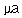

Signs for technical/specialized vocabulary
David Bar-Tzur
Links updated monthly with the help of LinkAlarm.

Amici compound microscope; fructose molecule.1
EXPLANATION OF THE GLOSSING SYSTEM
(to understand how I describe the signs in this dictionary).
For content knowledge of how to use the physics terms in context, see Guided tutorial in physics for interpreters.
For negotiating and developing temporary signs, see Preparation and sign negotiation
For vocabulary lists to determine helpful signs for a specific discipline, see Vocabulary lists by topic.
- Maariv
- NIGHT JEWISH-PRAY, where the second sign is (2h)[B], PO up, one hand crossed over the other, as if reading from a book. The hands are rocked to and fro.
- Mac (computers)
- M-A-C.
- macaroni
- (2h)[G], POs away, FOs up, are held side-by-side, touch sides of FTs, separate and close twice to (2h)[bO] to describe small rectangles. For a QuickTime movie of this sign, see ASL browser - macaroni.
- mace (Middle Ages)
- BALL + (2h)[S] swing mace in a circle.
- macho, machismo
- [S] rubs little finger side of fist against pectoral with tongue stuck in dominant cheek.
- machzor
- FESTIVAL PRAYER BOOK.
- MacIntosh
- M-A-C.
- macro (computers)
- (1) M-A-C-R-O. (2) M-BIG.
- macular degeneration
- (1) A-M-D. (2) A-R-M-D.
- Magen David
- (1) D-STAR. (2) JEWISH STAR. (3) (2h)[L], POs away, FOs up, index fingers are bent slightly towards each other to make a triangle (but do not touch). Hands are bent at wrists rapidly twice to show the inverted triangle on an upright one.
- magma
- M-A-G-M-A.
- magnesium
- M-G. For more information on this and other elements, see The elements. And for fun, see Elements by Tom Lehrer. To see this song with captions, go to The Elements song by Tom Lehrer.
- magnet
- ~
- [5], PO away, rushes backwards to [B], PO away, FO up, and DH closes to [O^] while sticking. For a QuickTime movie of this sign, see ASL browser - magnet.
- permanent ~
- P-M.
- magnetars
- MAGNET + [O^], PO away, FO up, flashes open and closed repeatedly.
- magnetic
- (2h)[5], POs down, move up, come together and touch while closing to (2h)[O^]. For a QuickTime movie of this sign, see ASL browser - magnetic.
- magnetic circulation
- Draw a lowercase lambda (
 ) in the air.
) in the air.
- magnetic dipole moment
- "M" is shaken underneath [1], PO down, FO > DS, like an M vector.
- magnetic field
- MAGNET INFLUENCE"all", where INFLUENCE ends with a broad movement like THEREABOUTS.
- magnetic field intensity
- "H" is shaken underneath [1], PO down, FO > DS, like a H vector.
- magnetic flux
- DH [1], PO > NDS, FO up, touches the front of (or the back of) NDH [O], PO > DS.
- magnetic flux density
- "B" is shaken underneath [1], PO down, FO > DS, like a B vector.
- magnetic ink character recognition
- M-I-C-R.
- magnetic permeability
- Draw a lowercase mu (
 ) in the air.
) in the air.
- magnetic potential
- "A" is shaken underneath [1], PO down, FO > DS, like an A vector.
- magnetic prominence
- MAGNET + [5 wg], PO > signer, FO up, rises past NDH [B], PO down, FO > DS.
- magnetic resonance
- M-R.
- magnetic spin
- ~
- (2h)[5], POs down, move up, come together and touch while closing to (2h)[O^] + DH [1^], PO down, FT revolves around FT of NDH [1], PO > DS, FO up. For a QuickTime movie of the first sign, see ASL browser - magnetic.
- ~ down
- ~ (general)
- (2h)[5], POs down, move up, come together and touch while closing to (2h)[O^] + FT of DH [1^], PO down, revolves around FT of NDH [1], PO > signer, FO up + DH [A dot], PO away, FO > NDS, pokes thumb downwards several times. For a QuickTime movie of the first sign, see ASL browser - magnetic.
- ~ (s orbital)
- Draw a lowercase sigma (
 ) in the air + STAR.
) in the air + STAR.
- ~ (p orbital)
- (1)Index and little fingers of DH are pointed downwards + STAR. (2) DH [1], PO down, FO > DS is held above and taps FT of NDH [V], PO away from signer, FO up + STAR.
- ~ (d orbital)
- Draw a lowercase delta (
 ) in the air + STAR.
) in the air + STAR.
- ~ (f orbital)
- DH [1], PO > NDS, FO up, touches the front of (or the back of) NDH [O], PO > DS + STAR.
- ~ up
- ~ (general)
- (2h)[5], POs down, move up, come together and touch while closing to (2h)[O^] + FT of DH [1^], PO down, revolves around FT of NDH [1], PO > signer, FO up + DH [A dot], PO > signer, FO > NDS, pokes thumb upwards several times. For a QuickTime movie of the first sign, see ASL browser - magnetic.
- ~ (s orbital)
- Draw a lowercase sigma () in the air.
- ~ (p orbital)
- (1)Index and little fingers of DH are pointed downwards. (2) DH [1], PO down, FO > DS is held above and taps FT of NDH [V], PO away from signer, FO up.
- ~ (d orbital)
- Draw a lowercase delta () in the air.
- ~ (f orbital)
- DH [1], PO > NDS, FO up, touches the front of (or the back of) NDH [O], PO > DS.
- magnetism
- MAGNET FORCE.
- magnetomotive force
- M-M-F.
- magnetosphere
- MAGNET SPHERE, that is, [5], PO away, rushes backwards to [B], PO away, FO up, and DH closes to [O^] while sticking + BALL. For a QuickTime movie of MAGNET, see ASL browser - magnet.
- magnetron
- M-A-G.
- magnification
- (1) (2h)[B], PO ><, FO away, separate suddenly in upward arc. (2) (2h)[L:], PO ><, FO away, separate suddenly in upward arc. For a QuickTime movie of this sign, see ASL browser - enlarge. To show something like "the magnification is 100 power" - MAGNIFICATION HOW-MUCH? 500 "X".
- magnify
- ~ (an image)
- (1) (2h)[B], PO ><, FO away, separate suddenly in upward arc. (2) (2h)[L:], PO ><, FO away, separate suddenly in upward arc. For a QuickTime movie of this sign, see ASL browser - enlarge.
- ~ (God's name)
- (1) (HIS NAME) + (2h)[5], POs up, are raised high. For an animated gif of this sign, see Animated dictionary of religious signs - Deaf Missions: Exalt. (2) (HIS NAME) ADVANCED. For an animated gif of this sign, see Animated dictionary of religious signs - Deaf Missions: Exalt.
- magnifying power
- "M".
- magnitude
- (1) SHOW HOW-MUCH? (2) NDH [B], PO up, FO away.
DH [B], PO down, arcs in mound over NDH.
- magnum cum laude
- WITH GREAT PRAISE.
- Mahayana
- MAJORITY BUDDHISM.
- mainline (a drug)
- [1], PO > signer, FO > NDS, runs finger down middle of arm [loose B], then [L] injects FT into inside joint of elbow while cocking thumb.
- main processing unit
- M-P-U.
- main sequence
- [L], PO away, FO up, is held up to represent the axes of a graph and the [G] shows a diagonal strip that starts high up on the y-axis and moves downwards and to the right.
- mainstream, mainstreaming (Deaf students)
- ~ (neutral)
- (2h)[5], POs down, FOs ><, move so that FOs are away and then move away, with DH touching NDH from above.
- ~ (pejorative)
- NDH [5] and DH [1]; POs down, FOs ><, move so that FOs are away and then move away, with NDH touching DH from above and in some variations, pushing it down like OPPRESS.
- maintenance (Automotive and computers)
- TAKE-CARE-OF.
- majesty
- (1) (2h)[5], POs><, FOs away from signer, DH which is on top wiggles fingers while ascending. For an animated gif of this sign, see Animated dictionary of religious signs - Deaf Missions: Glory. (2) (2h)[5], POs><, FOs away from signer, DH which is on top moves > NDS, then wiggles fingers while moving in an upward arc > DS. For an animated gif of this sign, see Animated dictionary of religious signs - Deaf Missions: Glory.
- major axis
- (2h)[Bb], POs > opposite side, FOs away, DH is held above and touching NDH and DH moves straight down the NDH + A-X-I-S.
- major species (Chemistry)
- (2h)[Bb], POs > opposite side, FOs away, DH is held above and touching NDH and DH moves straight down the NDH + S-P-E-C-I-E-S.
- majority
- MAJOR GROUP, where the first sign is (2h)[B], PO ><, bottom of DH slides along index finger of NDH. For a QuickTime movie of this sign, see ASL browser - majority.
- make love
- (1) (2h)[1], FOs away, palms are rubbed in a circular motion against one another. Facial expression shows affection. (2) (2h)[ILY], FOs away, "palms" are rubbed in a circular motion against one another. Facial expression shows affection.
- make out (sexual)
- (2h)[S] cross at wrists and nod as if making out.
- make the bed
- BED + (2h)[O^] start with wrists bent so that the FTs are bent under and pointing to signer, then wrists unbend while hands open to (2h)[5].
- make-up
- ~ (regular)
- (2h)[O^], alt. twist at checks while moving up face.
- ~ (stage)
- (2h)[B], run FTs down cheeks 2x.
- malach
- ANGEL.
- Malachi [Heb. Malachi]
- M-A-L.
- Malaysia
- (2h)[B], alt. circle head at sides. For a QuickTime movie of this sign, see ASL browser - Malaysia. To see the reference source for the sign(s) for this country or to look up other countries in the same geographical area, see Indigenous signs for countries. To find signs for cities within this country (some have no entries) see Indigenous signs for cities.
- male
- [5] touches thumb to temple and then to midchest.
- male privilege
- [5] touches thumb to temple and then to midchest BENEFIT.
- male to female, MTF
- M-T-F.
- male-bodied
- BODY + [5] touches thumb to temple and then to midchest.
- malignant
- SICK SPREAD WORSE++'travelling upwards'
- Malta
- [1] draws cross on forehead. (< Cross on upper lefthand corner of the Maltese flag.) To see the reference source for the sign(s) for this country or to look up other countries in the same geographical area, see Indigenous signs for countries. To find signs for cities within this country (some have no entries) see Indigenous signs for cities.
- maltreatment
- (2h)[X], POs ><, FOs > person being maltreated, DH slides over top of NDH, then vice versa, and DH over NDH again. For a QuickTime movie of this sign, see ASL browser - maltreatment.
- mammary region
- [B^] touches NDS nipple, then DS nipple + [5], PO > chest, FO up, moves in a small circle at this region (does not touch).
- management
- CONTROL GROUP.
- management information system
- M-I-S.
- manatee
- (2h)[B], POs down, FOs away, DH on top of NDH, thumbs circle as if they were flippers.
- mandala
- (2h)[M], POs away, FOs up, touch and separate to trace a circle and retouch at the bottom of the circle.
- manganese
- M-N. For more information on this and other elements, see The elements. And for fun, see Elements by Tom Lehrer. To see this song with captions, go to The Elements song by Tom Lehrer.
- manger
- (2h)[V], POs ><, FOs up, interlock fingers.
- manicure
- [F] applies nail polish to NDH [5]. For a QuickTime movie of this sign, see ASL browser - manicure.
- manifest, manifestation
- (1) SHOW. (2) SHOW-UP.
- manifold
- ~ (automotive)
- M-A-N-I-F-O-L-D.
- ~ (many)
- MANY*.
- mankind
- PEOPLE.
- mantle (Jewish)
- TORAH COVER (2h)C-CL'slip cylindrical cover over Torah scroll'.
- man-to-man (Basketball)
- (1) MAN MAN. (1) M-M.
- manual transmission
- [S] moves as if changing a gear shift on the floor.
- Manual Codes for English
- M-C-E.
- manual communication
- (1) HAND COMMUNICATE. (2) SIGN COMMUNICATE.
- manualism
- SUPPORT SIGN.
- Manually Coded English
- M-C-E.
- manufacture
- MAKE+. For a QuickTime movie of this sign, see ASL browser - manufacture.
- manure
- ANIMAL + the thumb is pulled out from the bottom of the closed fist. For a QuickTime movie of the second sign, see ASL browser - manure.
- map (v)
- MAKE M-A-P.
- mappah
- FABRIC RECT-CL'long rectangular sash'. (FOR-FOR? TIE TORAH.) (Heb) "rectangular piece of cloth."
- mapping (math)
- M-A-P-P-I-N-G.
- march
- (2h)[4], POs > signer, FOs down, nod forward at wrist several times as if feet were marching.
- Mardi Gras
- (2h)[M] trace a smile on the face, then HS change to (2h)[G] and trace a frown.
- mare (pl. maria)
- MOON (2h)bC-CL'lake'.
- margarine
- FALSE BUTTER. For a QuickTime movie of this sign, see ASL browser - margarine.
- margin (business)
- M-A-R-G-I-N.
- margin (computers and word processing)
- bC-CL, PO away, runs thumb along little finger edge of, Bb], PO > signer, FO up. For a QuickTime movie of this sign, see ASL browser - margin.
- margin ("for error" or "of error")
- HOW-MUCH ERROR ALLOW?
- marginal propensity to consume
- M-P-C.
- marginal propensity to save
- M-P-S.
- marginalized
- PERSON (GROUP), SOCIETY PUSH-ASIDE. PUSH-ASIDE = [Bb], PO > NDS, FO away, hand is twisted away and pushes something > DS.
- marijuana
- ~, grass, pot, weed, dope.
- (1) [bO] holds joint to mouth and moves rapidly back and forth twice while inhaling. (2) [F] is held at mouth and moved as if rapidly toking (smoking a joint). For a QuickTime movie of this sign, see ASL browser - marijuana. (3) [W] or [M] taps FT against NDH bicep. (4) [M] taps top of extended finger of [1], PO > signer, FO away. (5) [T] taps thumbside against mouth. James Woodward in Signs of drug use comments that only people who don't smoke marijuana use this sign.
- Columbian Gold
- (1) Thumb of [C] is tapped against temple + GOLD. (2) C-G.
- to clean grass
- (2h)[5:], POs down, FOs ><, hands circle symmetrically, parallel to the chest, traveling down when they meet.
- wanna smoke grass?
- Non-manual sign: Head tilts several times > NDS and mouth looks like it's holding a joint while inhaling several times.
- joint
- (1) [I], PO > NDS, FO away, twists slightly several times. (2) (2h)[I], NDHPO > DS, DHPO > signer, FTs touch and DH moves away slightly several times as if showing th shape of the joint.
- kilo of ~
- (1) BOX. (2) K-I-L-O.
- pass joint around
- [G] is held with FT up and is passed in a semicircle towards the NDS.
- roll a joint
- (2h)[O^], POs up, FOs away, move forward while closing to (2h)[A] in a small double movement.
- rolling paper
- PAPER + (2h)[O^], POs up, FOs away, move forward while closing to (2h)[A] in a long smooth movement.
- ~ pipe
- [L: dot] hold pipe to mouth and inhales through pursed lips several times while drawing head back once.
- marine
- ~ (Corps)
- [C] surrounds neck and taps palm against throat.
- ~ (ocean)
- OCEAN POSS.
- marionette
- (2h)[Bb] bent at wrist face each other while alt. opening and closing their "mouths". For a QuickTime movie of this sign, see ASL browser - marionette.
- mark
- FT of [bO] makes small mark on palm of [B], PO > DS, FO away.
- Mark (Κατὰ Μᾶρκον)
- M-A-R-K.
- market (business)
- SELL+. For a QuickTime movie of this sign, see ASL browser - market.
- marketing
- SELL++ moves in circle parallel to floor.
- maror
- (1) M-BITTER. (2) BITTER GREEN. (3) BITTER FOOD.
- marriage
- (2h)[C], POs ><, DH circles NDH from above and then descends and clasps it.
- marrow
- BONE INSIDE, where the first sign is (2h)[V:], POs towards, tap wrists together. For a QuickTime movie of this sign, see ASL browser - marrow.
- marshmallow
- (2h)[H dot] surround an imaginary marshmallow and squeeze lightly twice. To see a series of stills of this sign, go to "marshmallow" American Sign Language.
- martyr
- [M] is passed across the throat. (< slitting the throat.)
- (the Virgin) Mary
- (1) [M] touches DS temple and DS shoulder. (2) [M] touches NDS temple, is drawn across forehead, and touches DS shoulder. (3) [V] touches NDS shoulder, is drawn up to and across forehead while changing to [M], and touches DS shoulder. (4) [V] touches NDS temple, is drawn across forehead, and touches DS shoulder. (5) (4) + M-A-R-Y. (< all are a parallel to the veil that nuns wore, and (3) adds initialization from the Virgin Mary.)
- Masada
- (2h)[M], POs away, FOs up, DH descends and separates in a wavy pattern.
- mascara
- NDH [4], PO down, is held at NDS eyebrow and FT of [H] brushes at "eyelash".
- masculine
- [5] touches thumb to temple and then to midchest.
- mash
- [S] repeatedly strikes palm of [B], PO up, FO away, while twisting DH back.
- mashgeach
- (1) KOSHER SUPERVISOR. (2) YESHIVA SUPERVISOR.
- Mashiach
- (1) M-KING. (2) ANOINT KING, where the first sign is an [A] which circles the head with the thumb pointing downwards as if oil is being poured on the head. (3) M-PREDICT AGENT. (4) M-SAVE AGENT.
- masjid (مسجد)
- (1, ASL) [bC], PO away, FO up, taps against top of [S], PO down, FO away. (2) DH [bC], PO away, FO up, rests on the dorsum (backhand) of [B], PO down, FO > DS. For a film of this Saudi sign, click on Mosque.
- mask
- ~ (a stage)
- (2h)[B], FOs away, DPO > NDS, twist PO so that it is down as it descend on the NDH, NDPO down.
- ~ (baseball)
- [5^] puts mask onto face.
- ~ (ceremonial)
- (1) (2h)[B^], POs > signer, FOs up, cover and uncover the face 2x. (2) (1) FTs of [B], PO > signer, FO up, taps nose.
- ~ (computers)
- (2h)[M], POs > signer, FOs up, repeatedly cover and uncover the face.
- ~ (v, as in "mask the taste")
- NDH [B], PO up, FO away, is held in neutral space, and DH [B], PO down, FO away, moves towards NDS and slides over the surface of NDH with th as if trying to cover up.
- masonry
- M-A-S-O-N-R-Y.
- masquerade
- MASK PARTY. For a QuickTime movie of the first sign, see ASL browser - masquerade.
- mass
- ~ (Christian)
- (2h)[F], FOs away, is held together at thumbtips and is lifted up. (< the priest lifting the host.)
- a ~
- SOMETHING HAVE M-A-S-S, A-CL'place object in space'. Use a different classifier if it's more appropriate. For more information, see Use of classifiers in technical discourse.
- the ~ (of something)
- M-A-S-S. Note: not M-WEIGH since mass is independent of weight.
- massacre
- KILL SCADS-OF/AUDIENCE. For a QuickTime movie of this sign, see ASL browser - massacre.
- massage
- The hands touch the shoulder and then move in a manner that is, similar to that of rubbing (massaging) a person's shoulder. For a QuickTime movie of this sign, see ASL browser - massage.
- mass defect
- M-A-S-S SUBTRACT'multiple small movements'.
- mass density
- Draw an lowercase rho (
 ) in the air.
) in the air.
- massive compact halo object
- M-A-C-H-O. (sic)
- massively parallel processor
- M-P-P.
- mass number
- M-A-S-S NUMBER.
- master boot record
- M-B-R.
- master control
- M-C.
- Master of Arts
- M-A.
- Master of Science
- M-S.
- master oscillator
- M-O.
- Master's (degree)
- (<) M-A, (>) M-S.
- masturbation
- ~ (general)
- Shift lf, produce "masturbate (female)", shift rt, produce "masturbate (male)".
- (female solitary) ~
- (1) [open 8] moves extended finger repeatedly towards pubic area. (2) [open 8] moves extended finger repeatedly towards opening of vagina as suggested by [L], FO down.
- (female mutual) ~
- (2h)[open 8], hands cross with DPO up, NDPO down, hands move repeatedly in the direction of the extended middle fingers.
- (male solitary) ~
- (1) [S], PO > signer, FO > NDS, moves up and down. (2) (2h)[S], DH directly above and touching NDH, POs > signer, move up and down.
- (male mutual) ~
- (2h)[S], POs up, arms crossed, hands move in a conceptually accurate way.
- (male, female mutual) ~
- DH [S], PO > signer, FO > NDS, NDH [open 8], PO up, FO > DS, arms crossed and hands ascend and descend together repeatedly.
- Matanot l'Evyonim
- DURING PURIM, HELP POOR.
- material
- (2h)[bO], POs up, FOs away, are held in together in place while thumbs rub against FTs.
- materialize
- SHOW-UP LIKE MAGIC.
- mate swapping (wife swapping)
- (HUSBAND, WIFE) (2h)[V], DH elbow is held high so that its FT can point to NDH FT, and both hands move from NDS to DS while alt. pronating and supinating.
- Matlin, Marlee
- M-M.
- matmid
- TALMUD, STUDY"overtime" where the second sign is [5], FT > NDH palm, move towards palm of [B], PO up, FO away, which represents a page. The FT do no flutter and "sta, sta, sta" is mouthed.
- matriculate
- COLLEGE PROGRAM SIGN-UP.
- matrix
- (2h)[M], POs away, FOs up, hands descend in the shape of parentheses.
- matter
- (2h)[bO], POs up, FOs away, are held in together in place while thumbs rub against FTs.
- Matthew (Κατὰ Μαθθαῖον)
- M-A-T-T.
- mattress
- (1) BED SOFT. For a QuickTime movie of this sign, see ASL browser - mattress. (2) (2h)[C^], POs ><, FOs up, squeeze fingers together as if flexing a mattress.
- mature
- ~ (adj)
- [M], PO away, travels up palm of [B], PO away. For a QuickTime movie of this sign, see ASL browser - mature.
- ~ (v, if animal is upright or for any plant)
- FULL GROW-UP.
- ~ (v, if animal is not upright)
- FULL GROW-HORIZONTALY.
- matzah
- (1) CRACKER. (2) M-CRACKER. (3) (Israeli sign)[Bb], PO down is tapped against the teeth.
- maximal
- ~ absolute error
- MAXIMUM MISTAKE.
- ~ relative error
- MAXIMUM MISTAKE, COMPARE.
- maximize
- ~
- MAKE MAXIMUM.
- ~ a window (computers)
- (2h)[L], POs away, DH FO > NDS, NFO up, the hands frame a small computer window and move apart as if making the window expand.
- maximum
- (1) DH [B], PO down, rises until it slaps bottom of NDH, PO down. For a QuickTime movie of this sign, see ASL browser - maximum. (2) M-A-X.
- maximum current (Imax)
- I M-A-X"subscripted".
- maximum voltage (Vm, Vmax)
- (1) V M-A-X"subscripted". (2) V M"subscripted".
- mayonnnaise
- M-A-Y-O.
- mayor
- M-GOVERNMENT. For a movie of this sign, see Dictionary of Sign (ASL) - mayor.
- Mazao
- FOOD COLLECT"each".
- Mazel Tov!
- (1) CONGRATULATIONS. (2) (Israeli sign) DH [5^] strikes wrist against the wrist of the NDH [5^], PO up, then [5^] is held high with PO > signer and is brought down and closed into an [O^].
- McDonald's
- [M], PO away, traces an "M" in the air. For a QuickTime movie of this sign, see ASL browser - McDonald's.
- meadow
- (2h)[O^], POs down, are brought to mouth + FLOOR. For a QuickTime movie of this sign, see ASL browser - meadow.
- mean (Statistics)
- ~ (general)
- AVERAGE.
- ~ (population)
- Draw the shape of the letter mu () in the air.
- ~ (sample)
- "X", then draw a bar over the "X".
- mean free path
- Draw a lowercase lambda () in the air.
- mean time between failures
- M-T-B-F.
- meanwhile, meantime
- SAME TIME, OTHER PLACE.
- measles
- FTs of (2h)[5:] hop up cheeks to show locus of measles. For a QuickTime movie of this sign, see ASL browser - measles.
- measuring tape
- (2h)[Y], POs away, FOs up, tap thumbs together + (2h)[A], POs down, FOs away, touch thumbs and separate.
- Mecca (مكة)
- (2h)[B], PO > signer, FOs up, moves to and fro. For a film of this sign, click on Mecca.
- mechanic
- [3] or [V] interlaces with [1] to show pipe being wrenched. For a QuickTime movie of this sign, see ASL browser - mechanic.
- mechanical
- MACHINE, that is, (2h)[5:], PO towards, interlace fingers and twist at wrists so that hands appear to be enmeshed gears. For a QuickTime movie of this sign, see ASL browser - machine.
- mechanical advantage
- MACHINE BENEFIT.
- mechanical drawing
- ENGINEERING DRAW.
- mechanics (as in "celestial mechanics")
- M-E-C-H-A-N-I-C-S.
- mechanism
- MACHINE, that is, (2h)[5:], PO towards, interlace fingers and twist at wrists so that hands appear to be enmeshed gears. For a QuickTime movie of this sign, see ASL browser - mechanism.
- mechitzah
- WALL SEPARATE MEN WOMEN FOR PRAY.
- media
- M-E-D-I-A.
- medial (anatomy)
- (2h)[1], POs > signer, FOs ><, move > each other repeatedly but don't touch.
- mediate
- [1], FO > NDS is placed in palm of [B] and both move to and fro together. For a QuickTime movie of this sign, see ASL browser - mediate.
- Medina (المدينة المنورة)
- [1], PO away, FO up, touches ear and then moves > DS twice. For a film of this Saudi sign, click on Medina.
- meditate
- ~ (Eastern religions)
- (1) DH [F], PO up, is laid on top of NDH [B], PO up with eyes closed and head held high. (2) (2h)[F or 8], POs up, are held at their respective sides with eyes closed and head held high.
- ~ (Western religions)
- (1) [1] circles temple. For a QuickTime movie of this sign, see ASL browser - meditate. (2) [M] circles forehead. (3) REST + [1] circles forehead with eyes closed.
- medium
- ~ (singular of "media")
- M-E-D-I-A, WHICH?
- ~ (size)
- "M".
- ~ (wave mechanics)
- MATERIAL BETWEEN.
- medium frequency
- M-F.
- medium scale integrated circuit
- M-S-I.
- medium scale integration
- M-S-I.
- medium shot
- (1) M-S. (2) CENTER PICTURE.
- medulla oblongata
- [5:] taps the back of the head very low, to distinguish it from the cerebellum, which is a bit higher.
- meforshim
- RABBI WRITE EXPLAIN (TORAH, TALMUD, PROPHET, or whatever the topic is).
- mega- (106)
- M- [plus unit abbreviation].
- megabit
- "M" B-I-T.
- megabyte
- M-B.
- megahertz
- M-H-Z.
- megaohm (M
 )
) - M OMEGA, where the second sign is [bC], PO down, held so that the omega shape is seen clearly.
- megaparsec
- M-P-C.
- megillah
- (1) (2h)[5:], POs down, FOs ><, separate while wiggling fingers as if rolling out scroll with fingers. (2) (2h)[A], POs ><, FOs away, DH rolls out scroll while NDH is stationary, but really it would make more sense to have the NDH do it, since Heb. reads from right to left and the scroll is therefore rolled out with the NDH. (3) PURIM STORY.
- meiosis
- (2h)[5:] touch FT to FT, the FTs close to (2h)[O] while retaining contact, then the two hands separate.
- meitnerium
- M-T. For more information on this and other elements, see The elements. And for fun, see Elements by Tom Lehrer. To see this song with captions, go to The Elements song by Tom Lehrer.
- mekadaish
- MAKE SEPARATE.
- Melachim Aleph
- (1) FIRST K-I or FIRST BOOK KING. (2) FIRST BOOK KING INDEX-LIST-ON-HAND.
- Melachim Beit
- (1) SECOND K-I or SECOND BOOK KING+. (2) SECOND BOOK KING INDEX-LIST-ON-HAND.
- Melchizedek (Priesthood) (LDS [Mormon])
- [M], PO away, makes arc over NDH [S], PO down, following direction of arm.
- Melech haMessiach
- (1) M-KING. (2) ANOINT KING, where the first sign is an [A] which circles the head with the thumb pointing downwards as if oil is being poured on the head.
- melodrama
- ACT EXAGGERATE.
- melon
- [8] flicks middle finger against [S], PO down. For a QuickTime movie of this sign, see ASL browser - melon.
- melting pot
- DISSOLVE BOWL.
- membrane
- SURFACE + [G], PO away, rubs thumb across surface of [B], PO down, FO > DS.
- memorial
- ~ (if an activity)
- LOOK-BACK REMEMBER.
- ~ (if physical)
- SHAPE REMEMBER.
- memory
- (1) FTs of [5:] touch temple and move away while changing to an [S].
(2) THINK HOLD. For a QuickTime movie of this sign, see ASL browser - memory. (3) Thumb of [A] twists at temple. (4) REMEMBER.
- memory management unit
- M-M-U.
- menarche
- MENSTRUATE VERY-FIRST TIME, where the second sign is [1], PO down, FO away, supinates like the sign FIRST, but strikes the thumb of NDH [A dot], PO > DS, FO away.
- mendelevium
- M-D. For more information on this and other elements, see The elements. And for fun, see Elements by Tom Lehrer. To see this song with captions, go to The Elements song by Tom Lehrer.
- Mennonite
- (1) (2h)[bO]-CL'tie bow under chin'. (2) (2h)[bX] is brought down from each side of the head to show the ribbon of the bonnet Mennonite women traditionally wear. For a movie of this sign, see Dictionary of Sign (ASL) - Mennonite.
- menopause
- (1) CHANGE LIFE. (2) MENSTRUATE, NO MORE.
- menorah
- CHANNUKAH LAMP.
- mens
- LAW, INTEND REBEL.
- menstrual cramps
- [A] taps palmside against DS of jaw twice + (2h)[5:] are held at abdomen and twist while closing to (2h)[S] as if wringing out a sponge.
- menstruate, menstruation
- [A] knocks palm side at DS jaw several times with pc. For a QuickTime movie of this sign, see ASL browser - menstruation.
- mental
- FT of [X] taps DS temple.
- mental cruelty
- PICK-ON"over time + sta".
- mental region
- [B], PO > signer, FO up, taps chin with palmar side of FT + [5], PO > chin, FO up, moves in a small circle at the chin.
- mentally retarded
- (1) D-D (developmentally disabled). (2) Touch temple with FT of [M] then [R]. For a QuickTime movie of this sign, see ASL browser - mentally retarded. (2) may be seen as offensive, (1) is preferable.
- mental telepathy
- (2h)[S] are held with FTS facing one another with one at the temple and the other in high neutral space. The two HSs flick their index fingers at each other repeatedly as if sending a message.
- mentoring
- (2h)[1], POS away, FOs up, DH leads NDH as both move forward with NDH behind.
- mentorship
- (2h)[1], POS away, FOs up, DH leads NDH as both move forward with NDH behind + RELATIONSHIP.
- menu (for food or computers)
- LIST. For a QuickTime movie of this sign, see ASL browser - menu.
- meqarev
- CONVINCE BECOME RELIGIOUS.
- Mercedes Benz
- DH [V], PO away, FO up, is placed behind NDH [O], PO > DS, FO up.
- merchandise
- (1) SELL+. For a QuickTime movie of this sign, see ASL browser - merchandise. (2) THINGS SELL.
- merchant
- SELL AGENT.
- merciful
- (1) KIND, that is, (2h)[B], POs > signer, FOs ><, DH revolves around NDH. (< wrapping a bandage as an act of kindness.) (2) FEEL PITY. Note: Some Deaf people avoid (2), believing it to be negative. (3) GRACE.
- mercury
- H-G. For more information on this and other elements, see The elements. And for fun, see Elements by Tom Lehrer. To see this song with captions, go to The Elements song by Tom Lehrer.
- mercy, have (asked of God)
- (1) PLEASE KIND TO US, where KIND is (2h)[B], POs > signer, FOs ><, DH revolves around NDH. (< wrapping a bandage as an act of kindness.) (2) FEEL PITY. Note: Some Deaf people avoid (2), believing it to be negative.
- merge (computers)
- FIT, that is, (2h)[5:], interlace FTs. For a QuickTime movie of this sign, see ASL browser - merge.
- merger
- (2h)[5], POs down, FOs ><, move so that FOs are away and then move away, with DH touching NDH from above.
- Merry Christmas!
- (1) M-C. (2) HAPPY CHRISTMAS. (3) M-HAPPY CHRISTMAS.
- mescaline
- M-E-S-C.
- mesh
- ~ (analysis)
- MAINSTREAM, that is, (2h)[5], POs down, FOs ><, move so that FOs are away and then move away, with DH touching NDH from above.
- ~ (verb)
- (2h)[5:], interlace FTs and move downward to show that things are falling into place. For a QuickTime movie of this sign, see ASL browser - mesh.
- Meshiach
- (1) M-KING. (2) ANOINT KING, where the first sign is an [A] which circles the head with the thumb pointing downwards as if oil is being poured on the head. (3) M-PREDICT AGENT. (4) M-SAVE AGENT.
- meson
- (1) M-E-S-O-N. (2) With the DH spell Q-Q and the second time the Q is formed, place the index finger over it like a bar (_), showing its quark/antiquark status.
- message
- (1) TELL-STORY. (2) POINT.
- Messiah
- (1) M-KING. (2) ANOINT KING, where the first sign is an [A] which circles the head with the thumb pointing downwards as if oil is being poured on the head. (3) M-PREDICT AGENT. (4) M-SAVE AGENT.
- metabolism, metabolize
- (2h)[5] circle each other while fingers wg + [5:] touches FT to palm of [B], PO > DS, FO up, and DH closes and opens as is travels up the palm, as if taking small bites of it, while gnashing the teeth with each bite.
- metal inert gas welding
- M-I-G WELDING.
- metal oxide semiconductor
- M-O-S.
- metal oxide semiconductor field-effect transistor
- M-O-S-F-E-T.
- metal oxide varistor
- M-O-V.
- metals (Astronomy)
- M-E-T-A-L. Note: By this, astronomers mean any element heavier than helium. This is not the chemist's use of the term, and so I fingerspell it.
- metastasize
- SICK MOVE'up body or from specific location to specific location'.
- meteor, meteoroid
- 5^-CL'diagonal, twisting descent'.
- meteor shower
- (2h)5^-CL'diagonal, wavy descent' + alt.F-CL'shower diagonally'.
- meteorite
- 5^-CL'diagonal, twisting descent' ARRIVE EARTH.
- meteorology
- MAJOR WEATHER. Where MAJOR is (2h)[B], POs ><, FOs away, DH is placed on top of NDH and moves away while still in contact with it.
- meter
- ~ (unit of length)
- "M". Standard abbreviation.
- ~ (measuring instrument as in "voltmeter")
- DH [1], PO away, FO up, is held behind NDH [C], PO > DS, FO up, as if it were the frame to the meter, and the DH twists slightly as if it were the moving needle.
- meter-kilogram-second
- M-K-G-S.
- meters per second (meters/second, m/s)
- "M", then hand descends and signs "S".
- meters per second squared (meters/second/second, m/s2).
- "M", then hand descends and signs S SQUARED.
- method
- M-TRY.
- Methodist
- (1) ENTHUSIASTIC. (2) [M] taps FTs against palm of NDH [B], FOs up.
- methodology
- METHOD SYSTEM.
- metric
- ~ (a way to measure)
- WAY MEASURE.
- ~ (system)
- M-E-T-R-I-C.
- Metro (Washington, D.C subway)
- [M], PO away, FO up, shakes from left to right under [B], PO down, FO > DS.
- metropolitan (Orthodox Catholic)
- [M] is held above the head, moves to DS then down to the shoulder. (< the headdress worn when not serving mass.)
- Metropolitan Community Church
- M-C-C.
- metrosexual
- STRAIGHT COPY GAY.
- Mexico
- (1) Salute with [M].
(2) [V], PO > NDS, touches index finger to temple, then twists twice at wrist so that FO is away and pointing down slightly. For a movie of this sign, see Dictionary of Sign (ASL) - Mexico. To see the reference source for the sign(s) for this country or to look up other countries in the same geographical area, see Indigenous signs for countries. To find signs for cities within this country (some have no entries) see Indigenous signs for cities.
- mezzuzah
- (1) The DH [G] runs the extended fingertips against the NDH [B], PO facing the dominant side, FO up. (2) [B], PO > signer, touches the lips, then pronates as if touching the doorpost where a mezzuzah is mounted.
- mho
- M-H-O.
- Micah [Heb. Mikah]
- M-I-C.
- micro- (prefix)
- ~ (with general nouns, such as ~-computer)
- M-I-C-R-O.
- ~ (with units of measurement)
- Use [U] to represent the abbreviation for "micro", as in U-A for mu + a" > = microampere.
- microampere (a)
- (1) MU "A", where the first sign is, draw the shape of the letter mu () in the air. (2) U-A.
- micro channel architecture
- M-C-A.
- Microcom network protocol
- M-N-P.
- microcomputer unit
- M-C-U.
- microfarad (f)
- (1) MU "F", where the first sign is, draw the shape of the letter mu () in the air. (2) U-F.
- microgram (g)
- (1) MU "G", where the first sign is, draw the shape of the letter mu () in the air. (2) U-G.
- microhenry (H)
- (1) MU "H", where the first sign is, draw the shape of the letter mu () in the air. (2) U-H.
- micrometer
- ~ (tool)
- M-I-C.
- ~ (unit of length) (m)
- (1) MU "M", where the first sign is, draw the shape of the letter mu () in the air. (2) U-M.
- micrometer calipers
- U-M + [bC], PO > NDS, FO up, taps thumb and index finger together 2x. The initial "U" represents the "mu" in "micro-"
- micromho (mho)
- (1) MU M-H-O, where the first sign is, draw the shape of the letter mu () in the air. (2) U-M-H-O.
- micron (m, the name "micrometer" is preferable)
- (1) MU "M", where the first sign is, draw the shape of the letter mu () in the air. (2) U-M.
- microphone
- [S] holds mike to mouth and lips move as if speaking. For a QuickTime movie of this sign, see ASL browser - microphone.
- microprocessing unit
- M-P-U.
- microscope
- NDH [O], PO > DS, is held against eye and DH [bO] adjusts microscope by twisting.
- microsecond (s)
- (1) MU "S", where the first sign is, draw the shape of the letter mu () in the air. (2) U-S.
- microsiemens (S)
- 920 MU "S", where the first sign is, draw the shape of the letter mu () in the air. (2) U-S.
- MicroSoft
- M-S.
- MicroSoft disk operating system
- M-S-D-O-S.
- microvolt (V)
- (1) MU V, where the first sign is, draw the shape of the letter mu () in the air. (2) U-V.
- microwatt (W)
- (1) MU W, where the first sign is, draw the shape of the letter mu () in the air. (2) U-W.
- microwave
- RECTANGLE + (2h)[O^] open to (2h)[5^] as they move towards each other. For a QuickTime movie of this sign, see ASL browser - microwave.
- microwaves
- (2h)[O^] open to (2h)[5^] as they move towards each other + (2h)[5], POs down, FOs away, move forward while wiggling.
- mid-axillary line
- (2h)[I] draw a line from the respective axilla (armpits) down the sides of the torso.
- midbar
- COUNTRY (THEREABOUTS) DESERTED, where the last sign is (2h)[open 8], POs down, circle slightly, then move forward while closing to (2h)[A] and mouthing "thp".
- midbrain
- FT of [X] taps middle of top of head.
- mid-clavicular line
- (2h)[I] draw a line from the middle of the respective clavicles down the torso.
- middle ear
- CENTER EAR.
- midocean rise
- MIDDLE OCEAN + (2h)[B], FOs ><, overlap FT slightly and tilt so that the form a mound.
- midsagittal plane
- (2h)1-CL"trace a rectangle" + [B] twists hand back so that FT can cut down body starting at mid forehead and stopping by the waist.
- mid-sternal line
- [I] draw a line from the top of the mid-chest down the torso.
- midwife
- WOMAN MAJOR BABY + both open hands bring baby
out from birth canal. The second sign is both hands [Bb], that is, thumb tucked into palm, with the DH running its little finger side along the top (thumb side) of NDH.
- mighty
- (2h)[S], POs > signer, FOs up, move down at NDS then at DS.
- Mikah (Bible)
- M-I-C.
- mikdash
- T-CHURCH. For a QuickTime movie of this sign, see ASL browser - temple.
- mike
- [S] holds mike to mouth and lips move as if speaking. For a QuickTime movie of this sign, see ASL browser - microphone.
- mikvah or mikveh
- GO-UNDERWATER BECOME CLEAN*. The first sign is NDH [5], PO down, FO away, represents the surface of the water and DH [A dot], PO > NDS, FO away, descends.
- mil
- M-I-L.
- milah
- (1) (2h)[A dot], POs down, DHFT circles NDHFT as if cutting off foreskin. (2) POs down, DH [A dot] circles NDH [1] FT as if cutting off foreskin. (3) Either (1) or (2) with DELETE at the end. DELETE = Flick thumb against index finger and move hand upwards as if flicking something away. (4) DH [V] cuts at tip of NDH [1].
- milchig, milchik
- FOOD INVOLVE MILK.
- mild steel (Welding)
- M-I-L-D + [S] strikes and moves along the index finger of NDH, PO > DS, FO away, as if working it on an anvil.
- mildew
- M-I-L-D-E-W.
- mileage
- (2h)[1], point FTs at each other and DH spins around NDH to show odometer.
- milk shake
- MILK + [C], PO > DS, FO away, shakes container.
- Milky Way
- MILK bC-CL'vertical strip in sky'.
- Millenium (Christianity)
- JESUS RULE ONE-THOUSAND YEAR.
- millennium (general)
- ONE-THOUSAND YEAR.
- milli- (10-3)
- M- [plus unit abbreviation].
- milliampere
- M-A.
- milligram
- M-G.
- millihenry
- M-H.
- milliliter
- M-L.
- millimeter
- M-M.
- million bytes per second
- M-B-P-S.
- million instructions per second
- M-I-P-S.
- millions of floating point operations per second
- M-F-L-O-P-S.
- millions of instructions per second
- M-I-P-S.
- millions of operations per second
- M-O-P-S.
- millisecond
- M-S.
- millisecond pulsar
- M-S + [O^], PO away, FO up, flashes open and closed repeatedly.
- millisiemens
- M-S.
- millivolt
- M-V.
- milliwatt
- M-W.
- mime
- (1) M-PERFORM. (2) (2h)[5], POs away, FOs up, alt. rise and fall.
- minaret
- (2h)C-CL'tower' + (2h)[C] are cupped behind ears and the mouth is moved like a muezzin who is calling people to prayer.
- Minchah
- AFTERNOON + one [B], PO up, crossed over the other, as if reading from a book. The hands are rocked to and fro.
- mine (for minerals)
- FT of [X] scrapes at palm of [B], PO > DS, FO away, with small movement. For a QuickTime movie of this sign, see ASL browser - mine.
- minerals
- M-I-N-E-R-A-L-S.
- minhag
- C-USED-TO.
- mini- (prefix)
- M-I-N-I.
- Minimal Language Competency
- M-L-C.
- Minimal Language Skills
- M-L-S.
- minimize
- MAKE MINIMUM.
- minimize a window (computers)
- (2h)[L], POs away, DH FO > NDS, NFO up, the hands frame a large computer window and move together as if making the window shrink.
- minimum
- (1) DH [B], PO down, touches the top of NDH [B], PO down, and rises upward. Note: do not descend to the NDH as many interpreters do; Pat Graybill says this is a common mistake. (2) LESS-THAN, that is, DH [B], PO down, PO down, and rises upward and touches the top of NDH [B]. For a QuickTime movie of this sign, see ASL browser - minimum. (3) M-I-N.
- minimum current (Imin)
- I M-I-N"subscripted".
- minister (n)
- PREACH + AGENT. For an animated gif of this sign, see Animated dictionary of religious signs - Deaf Missions: Minister (noun).
- minister (v)
- (1) TAKE-CARE-OF. (2) M-SERVE. For an animated gif of this sign, see Animated dictionary of religious signs - Deaf Missions: Minister (verb)
- ministry
- (1) PREACH"each". (2) [M], PO down, brushes against [B], PO down or > signer. For an animated gif of this sign, see Animated dictionary of religious signs - Deaf Missions: Ministry. (3) M-WORK. For an animated gif of this sign, see Animated dictionary of religious signs - Deaf Missions: Ministry. (4) M-PREACH. (5) M-SERVE. (6) [M], PO down, FO > NDS, taps heart 2x. For an animated gif of this sign, see Animated dictionary of religious signs - Deaf Missions: Ministry.
- minor (in school or having less "weight")
- (2h)[B], PO ><, top of DH slides along pinkie of NDH.
- minor axis
- MINOR A-X-I-S.
- minority
- MINOR GROUP, where the first sign is (2h)[B], PO ><, top of DH slides along pinkie of NDH. For a QuickTime movie of this sign, see ASL browser - minority.
- minus
- [1], FO > NDS, is placed against the palm of [B], PO away. For a QuickTime movie of this sign, see ASL browser - minus.
- minute (plane angle)
- [1] draws a single quote (').
- minyan
- (1) M-GROUP. (2) M-GROUP TEN.
- miracle
- (1) WONDERFUL(1x) WORK. For an animated gif of this sign, see Animated dictionary of religious signs - Deaf Missions: Miracle. (2) WONDERFUL HAPPEN. (3) [M] touches FT TO [S], PO down, FO away, then rises in a wavy pattern. For an animated gif of this sign, see Animated dictionary of religious signs - Deaf Missions: Miracle. (4) DH [M] goes behind NDH [B], PO away, FO up.
- Miriam (Jewish)
- M-PROPHET.
- miscarriage
- (1) BABY LOSE.
- misconduct
- BAD DO. For a QuickTime movie of this sign, see ASL browser - misconduct.
- Mishebayrakh
- BLESS PEOPLE.
- Mishkan
- GOD HIS HOUSE CARRY-AROUND WILDERNESS.
- Mishlei (Bible)
- P-R-O-V.
- Mishloach Manot
- PURIM FOOD (2h)alt.GIFT-TO"each".
- Mishna
- M-TEACH.
- Mishumaa saba
- SEVEN CANDLE.
- missal (Roman Catholic)
- PRAY BOOK.
- missile
- [1] shoots upward in wavy pattern from [B] PO down. For a QuickTime movie of this sign, see ASL browser - missile.
- mission
- ~ (a missionary church or station)
- (1) Thumb side of [M] taps NDS of upper chest + HOUSE. (2) Thumb side of [M] taps NDS of upper chest + CHURCH.
- ~ (of an organization)
- GOAL.
- ~ (of Jesus)
- PREACH"each".
- ~ (the official work of a missionary)
- Thumb side of [M] rubs in a circle against NDS of upper chest. (< heart?). For an animated gif of this sign, see Animated dictionary of religious signs - Deaf Missions: Mission (Missions).
- ~ (LDS [Mormon])
- Thumb side of [M] taps NDS of upper chest.
- missionary
- [M], FO > DS, rubs under NDS clavicle + AGENT. (< heart?) For an animated gif of this sign, see Animated dictionary of religious signs - Deaf Missions: Missionary.
- mission president (LDS [Mormon])
- Thumb side of [M] taps NDS of upper chest + PRESIDENT.
- miter
- ~ (machining)
- DH [V] cuts at NDH, [Bb], PO > signer, FO > DS, at an angle + (2h)[B^] are held with FTs touching to show a mitered edge.
- ~ (religion)
- (2h)[B] traces the outline of the miter by touching the head with the heel of the hand and bringing the hands upwards and touching FTs.
- ~ (v)
- DH [V] cuts at NDH, [Bb], PO > signer, FO > DS, at an angle.
- mitochondria
- M-I-T-O.
- mitosis
- M-DIVIDE.
- Mittelschmerz
- M-I-T-T-E-L-S-C-H-M-E-R-Z.
- mitzvah
- M-DO'antisymmetric'.
- mixed drink
- [bC] taps thumb against lip twice.
- mixture
- CHEMICAL MIX.
- mizbeach
- (1) (2h)[A], POs away, FOs up, touch thumbs, separate, and move downwards. (2) (2h)[S] strike forearms together like TABLE.
- Mkeka
- RECT-CL'mat'.
- mnemonic
- FT of [M] touch temple, then FT of [N].
- mobility (orientation and ~)
- (1) [M] moves forward in wavy motion as in the sign TRAVEL. (2) [bX], PO > NDS, mimes the action of a cane being tapped from side to side while moving forward.
- mobilization, mobilize
- ARMY PREPARE.
- mode
- M-O-D-E.
- model, modeling
- (fashion) ~
- (1) (2h)[F], FO up, alt. move to and fro at elbows in an feminine manner with mm. (2) FT of (2h)[open 8] touch respective shoulders and shoulders sway from side to side while waist is held static.
- ~ (a behavior)
- SHOW H-O-W, if modeling for one person and SHOW"all" H-O-W, if modeling for more than one.
- modem
- M-O-D-E-M.
- modern
- NOW NEW+.
- modification, modify
- CHANGE++ with small movements.
- modified frequency modulation
- M-F-M.
- modified molecular formula
- M-WORLD F-LAW, CHANGE'small back and forth' FINISH.
- modular
- CLASS/GROUP"each".
- modulate, modulation
- CHANGE++ with small movements + FIT.
- modulation-doped field-effect transistor
- M-O-D-F-E-T.
- module
- (1) CLASS/GROUP"each". (2) M-O-D-U-L-E.
- modulo
- M-O-D.
- modulus
- M-O-D-U-L-U-S.
- Mohammed, محمد رسول الله (proper spelling is Muhammad)
- [B], PO down, FO > NDS, touches chin and descends. For a film of this Saudi sign, click on Mohammed Messenger of God. (< Muhammad's beard)
- mohawk (hairdo)
- [4], FO up, travels back on head from forehead.
- mohel
- CIRCUMCISE AGENT.
- moist, moisture
- WATER SOFT. For a QuickTime movie of this sign, see ASL browser - moisture.
- moksha
- LIFE CYCLE++ RELEASE.
- molality
- Place the NDH [G], PO > DS, FO up, next to the "M" with pc. This represents its symbol: lowercase m.
- molarity
- Place the NDH [bC], PO > DS, FO up, next to the "M" with pc. This represents its symbol: uppercase M.
- molar mass
- M-O-L-A-R M-A-S-S.
- molasses
- [L], PO > signer, FO > NDS, curls as it wipes off the chin and flicks FT down as if discarding it. For a movie of this sign, see Dictionary of Sign (ASL) - molasses.
- mold (plant)
- M-O-L-D.
- mole
- ~ (biology)
- ANIMAL + [1] wiggles while crossing the palm of [B], PO > DS. For a QuickTime movie of this sign, see ASL browser - mole.
- ~ (chemistry)
- M-O-L. This is the standard abbreviation, although why a four letter word needs an abbreviation eludes me.
- molecular cloud
- M-WORLD CLOUD, where the second sign if (2h)5:-CL outline a fluffy cloud.
- molecular formula
- M-WORLD F-LAW.
- molecule
- M-WORLD.
- molest
- (1) It is best to be as specific as possible. Other possible general expressions, if appropriate, are: (2) SEX, AWFUL HAPPEN. (3) SEX, WRONG TOUCH. (4) SEX, BAD TOUCH. (5) SEX DON'T-WANT, FORCE. (6) Use middle finger of [open 8] to touch the part of the body involved. (7) Middle finger of [open 8] flexes while rubbing down palm of [B], PO up, FO away, with tongue against teeth like pronouncing the letter "L". (8) (2h)[5:], POs down, FOs away, touch thumbs and pivot alt. against each other with malevolent facial expression.
- molybdenum
- (1) M-O. For more information on this and other elements, see The elements. And for fun, listen to Tom Lehrer singing the "Song of the elements" at Flashimation. Appropriate for the sciences. (2) M-O-L-Y. Appropriate for automotive settings.
- moment (engineering)
- [M] twists thumbside against palm of [B], PO away, FO up.
- moment of inertia
- "I".
- momentum
- "P".
- monarchy
- KING (QUEEN) RULE.
- monastic, monastery (Buddhism)
- [O^] changes to [5] while throwing the end of a monk's robe over the shoulder + PLACE. The first sign description is for a Buddhist monk.
- Mongolia
- (2h)[B], POs > signer, FOs ><, alt. move towards and away from signer while brushing FTs + [1], touches backhand to center of forehead. To see the reference source for the sign(s) for this country or to look up other countries in the same geographical area, see Indigenous signs for countries. To find signs for cities within this country (some have no entries) see Indigenous signs for cities.
- monitor
- ~ (n, such as equipment with a screen)
- SQUARE.
- ~ (v)
- (1) (2h)[V], POs down, sweep across visual field with eyes following. For a QuickTime movie of this sign, see ASL browser - monitor. (2) SUPERVISE.
- monk
- (Buddhist) ~
- [O^] changes to [5] while throwing the end of a monk's robe over the shoulder.
- (Christian) ~
- (1) (2h)[bO] pull up "hood" 2x. (2) FT of [open 8] circles top of head to indicate the tonsure (shaved spot).
- monochrome display adapter
- M-D-A.
- monograph
- ARTICLE.
- monologue
- ALONE TALK. For a QuickTime movie of this sign, see ASL browser - monologue.
- monomial
- [M], PO > NDS, FO away, moves in an upward arc > DS.
- monopolistic competition
- COMPETE CONTROL, but the second sign is held high with a negative expression.
- monopolize
- CONTROL ALONE, but the first sign is held high with a negative expression.
- monopoly
- ONLY-ONE SELLER.
- monopsony
- ONLY-ONE BUYER.
- monotheism
- BELIEVE ONE* GOD.
- monotone (sonics)
- Touch ear with index finger + (2h)[S], PO down, FO away, move antisymmetrically from side to side + (2h)[Bb], POs down, FOs away, touch side by side and DH moves forward without rising or falling.
- monotonically
- ~ decreasing
- (2h)[U], POs down, FTs cross with DH on top and then both descend in steps while DH supinates multiple times. INCREASE, NEVER.
- ~ increasing
- (2h)[U], NDHPO down, DHPO up, FOs diagonal as if they might cross, DH pronates while both rise in steps. DECREASE, NEVER.
- monsignor
- (1) C-CL'(red) sash at waist'. (2) M-G-R.
- monstrance
- (2h)S-CL'hold monstrance and move in the sign of the cross'.
- Monte Carlo
- [S], PO up, FO away from signer, shakes dice in air, then throws them > NDS. (< gambling casino.) To see the reference source for the sign(s) for this country or to look up other countries in the same geographical area, see Indigenous signs for countries. To find signs for cities within this country (some have no entries) see Indigenous signs for cities.
- monument
- SHAPE LOOK-BACK.
- moon
- (the Earth's) ~
- (1) ([bC] is held at eye and moves up in downward arc. (2) [bC] taps thumb below eye. For a QuickTime movie of this sign, see ASL browser - moon.
- the ~ (of any other planet)
- [bC] circles around [O^], PO up.
- Moore, Matthew
- [M] taps thumbside against center of chest. Journalist and writer.
- moral
- GOOD CHARACTER. For a QuickTime movie of this sign, see ASL browser - moral.
- morality
- MAJOR GOOD CHARACTER, where the first sign is (2h)[B], PO ><, bottom of DH slides along index finger of NDH. For a QuickTime movie of this sign, see ASL browser - major and ASL browser - moral.
- morals
- [M] twists and touches FT to NDS of chest. For a movie of this sign, see Dictionary of Sign (ASL) - morals.
- Mordechai (Jewish)
- M-JEW, looks like SWEET.
- more than
- (2h)[B^], touch FTs, then DH moves up in an arc towards the signer and away. For a QuickTime movie of this sign, see ASL browser - more than.
- Mormon (Church of Jesus Christ of Latter Day Saints)
- (1) CHURCH JESUS CHRIST LAST DAY + S-MEMBER. (2) [M] strokes "beard" at cheek.(3) L-D-S.
- Morocco (المغرب)
- (2h)[B], POs > signer, FOs ><, hands are held with DH just above eyes and NDH just below. Hands make tiny symmetric circles in place For a film of this sign, click on Morocco - المغرب. To see the reference source for the sign(s) for this country or to look up other countries in the same geographical area, see Indigenous signs for countries. To find signs for cities within this country (some have no entries) see Indigenous signs for cities.
- Moroni (LDS [Mormon])
- (2h)[I], POs ><, NDH held in front of DH, the hands are tapped against it each other several times.(< the depiction of Moroni with a trumpet as found on the spire of a LDS temple).
- morpheme
- M-WORD.
- mortal
- ~ (adj)
- DIE WILL.
- ~ (n)
- PERSON/PEOPLE, if it is felt necessary, can add UNDERSTAND SELF/WE WEAK, DIE WILL.
- mortar (construction)
- M-O-R-T-A-R.
- mortar and pestle
- [S] twists while grinding against palm of [C], PO up, FO away.
- mortgage
- (1) PAY++. (2) M-MONTH++.
- Moses
- (1) (2h)JEWISH, but with one long motion. (2) M-LAW. (3) (Catholic; Jehovah's Witness) (2h)[G], touch FTs to respective temples and move away while closing to (2h)[bO]. (< a Biblical passage describing Moses as coming down from Mt. Sinai with "beams of light" that was mistranslated as "horns".) This sign makes some Jews bristle because the mistranslation led to the belief that Jews were devils with horns, hooves, and tails. Best avoided. (4) M-WISE.
- Moshe Rabainu
- (1) (2h)JEWISH, but with one long motion. (2) M-LAW. (3) M-WISE.
- Moshiach
- (1) M-KING. (2) ANOINT KING, where the first sign is an [A] which circles the head with the thumb pointing downwards as if oil is being poured on the head. (3) M-PREDICT AGENT. (4) M-SAVE AGENT.
- Moslem (proper spelling is "Muslim")
- [bC], PO > NDS, FO up, moves forward + AGENT.
- mosque (مسجد)
- (1, ASL) [bC], PO away, FO up, taps against top of [S], PO down, FO away. (2) DH [bC], PO away, FO up, rests on the dorsum (backhand) of [B], PO down, FO > DS. For a film of this Saudi sign, click on Mosque.
- mosquito
- (1) [8] flicks middle finger against [S], PO down, then [B] slaps NDH. For a QuickTime movie of this sign, see ASL browser - mosquito. (2) (2h)[S], POs ><, NDH is held at nose and DH moves in a circle around the nose as if drilling into someone's skin.
- most significant bit
- M-S-B.
- most significant digit
- M-S-D.
- mother
- adoptive (~)
- (1) (2h)[5:] close to (2h)[S], and pull up abruptly. (2) ACCEPT, that is, (2h)[5], PO down, FO away, moves towards chest until it ends with (2h)[O^], flat against chest.
- biological (~)
- See "natural" below.
- foster (~)
- F-PARENT.
- natural (~)
- (1) NATURE. (2) REAL.
- step (~)
- (1) FALSE. (2) SECOND.
- motherboard
- MOTHER + [B] is inserted with double movement in NDH [Bb] with thumb parted a bit from palm.
- motion
- (make a) ~
- SUGGEST.
- ~ (physical)
- (2h)[O^], POs down, move forward in wavy pattern. For a QuickTime movie of this sign, see ASL browser - motion. Note: Classifiers are very useful for showing specific kinds of motion: see Use of classifiers in technical discourse.
- motivate
- ENCOURAGE.
- motivated
- ~
- (2h)[B], rub hands together.
- un~, lacking in ~
- (2h)[B], rub hands together, then with NDH held in place, the DH falls straight down.
- motivation, motive (Criminal Justice)
- (1) FT of [open 8] moves up the chest. For a QuickTime movie of this sign, see ASL browser - motive. (2) REASON BEHIND.
- motor area (brain)
- MOVE G-CL runs FT down side of head.
- motoric
- (2h)[S], held close to body and elbows move freely upwards as if full of energy and movement.
- Motorola emitter coupled logic
- M-E-C-L.
- motor skills
- ~
- SKILL MOVE.
- fine ~
- SKILL MOVE'small' SMALL. That is, the sign MOVE shows a tiny movement with hu.
- gross ~
- SKILL MOVE'big' BIG. That is, the sign MOVE shows a big movement with pc.
- mound (baseball)
- M-O-U-N-D + (2h)[loose 5], POs down, FOs away, NDH is held in place and DH arcs upwards to show shape of the mound.
- Mountain Dew
- Shoot self in head with [L]. For a QuickTime movie of this sign, see ASL browser - Mountain Dew.
- mourn
- (1) SAD"over time". (2) (2h)[S] twist at heart.
- mouse (computers)
- [1], PO > NDS, swipes nose, then 5:-CL, PO down, moves in circles as if operating a mouse.
- Mouse, Mickey
- (2h)[5:] tap FTs on the head at respective sides like mouse ears. For a QuickTime movie of this sign, see ASL browser - Mickey Mouse.
- movement
- ~ (in Lidell ~-Hold notation)
- "M".
- ~ (in Stokoe notation)
- M-O-V.
- Movement-Hold (Lidell)
- (<) "M", (>) "H".
- movie camera
- (1) [B] is held up like the side of a camera and [S] cranks the camera. For a QuickTime movie of this sign, see ASL browser - movie camera. (2) DH [5], PO down, FO > what is being filmed, rests wrist on FT of NDH [1], FO > DS, FO up, and DH flutters up and down from wrist.
- moyel
- CIRCUMCISE AGENT.
- mu,
- ~ (as an isolated letter)
- Draw the shape of the letter in the air.
- ~ (as an abbreviation for "micro")
- "U". For example, mu + a" > (abbreviation for "microampere") would be fingspelled U-A.
- much greater than (>>)
- (2h)[B^], POs ><, FOs up, FTs touch, then moves in two upward arcs that approach the signer.
- much less than (<<)
- (2h)[B^], POs ><, FOs up, FTs touch, then moves in two downward arcs that approach the signer.
- mucous membranes
- ~ (anal)
- [F], PO away, FO up, is held up and DH [1] points to the circular opening in the NDH and then travels in an outward arc to point to DS hip but in the general direction of the anus + with NDH still in place, DH is inserted into the circular opening and circles inside it.
- ~ (oral)
- INDEX-inside of mouth + [G], PO away, travels down palm of [B], PO > DS, FO up, with DH brushing thumb against NDH palm.
- ~ (penile)
- PENIS + O-CL, PO down, FO away, [1] travels around the inside walls of NDH.
- ~ (vaginal)
- VAGINA + with NDH held in place from the previous sign, DH G-CL has thumb travel along the inside edge of it.
- muezzin
- (2h)[C] are cupped behind ears and the mouth is moved like a muezzin who is calling Muslims to prayer.
- Muhammad, Mohammed (محمد رسول الله)
- [B], PO down, FO > NDS, touches chin and descends. For a film of this Saudi sign, click on Mohammed Messenger of God. (< Muhammad's beard)
- mullion
- BETWEEN + [G], PO away, FO > DS, descends.
- multi- (prefix)
- MANY.
- multichannel television sound
- M-T-S.
- multi-chip module
- M-C-M.
- multi-color graphics array
- M-C-G-A.
- multinomial
- MANY WORD/TERM.
- multinomial coefficient
- MULTINOMIAL C-O-E-F-F. Note: A given multinomial is of the form and is read "n over k (sub) 1, k (sub) 2, to k (sub) n" and is signed N'produced in the numerator space and then move into the denominator space for the following', K ONE'subscripted', K TWO'subscripted' . . . K N'subscripted' (2h)bC-CL'parentheses surround all'.
- multiple
- (adj, as in "~ reasons")
- MANY+.
- as in "12 is a ~ of 3")
- SOMETHING MULTIPLY, as in TWELVE EQUAL SOMETHING MULTIPLY 3.
- multiple-instruction multiple-data
- M-I-M-D.
- multiple-instruction single-data
- M-I-S-D.
- multiple partners
- SEVERAL or MANY SEX PARTNER.
- Multiple Personality Disorder
- M-P-D. Also called "Dissociative Identity Disorder (DID)".
- multiplex, multiplexer
- (1) M-U-X. (2) [5], PO > signer, FO > NDS, moves > DS while changing to [1], to show many channels being channeled into one.
- multiplying digital to analog converter
- M-D-A-C.
- multiprocessor
- M-P.
- mumps
- (2h)[S] are held at their respective sides below chin and move out slightly while opening to (2h)[5:]. For a QuickTime movie of this sign, see ASL browser - mumps.
- munchies (hunger from being on weed)
- (1) THINK STONE(1x) (2h)alt. EAT'ravenously'. (2) THINK STONE(1x) WANT (2h)alt. EAT'ravenously'.
- muon ()
- Draw a mu in the air + PARTICLE.
- muon neutrino ()
- Draw a nu in the air and then draw a mu that is, subscripted.
- mural
- WALL + [H], PO away, makes a sweeping brushstroke.
- muscle
- Tap bicep with FT of [X].
- muscular dystrophy
- "M" "D".
- musical (play)
- MUSIC PERFORM.
- musical instrument digital interface
- M-I-D-I.
- Muslim
- [bC], PO > NDS, FO up, moves forward + AGENT.
- mustard
- (1) [M], wipes FT down palm of [B], and then twists and moves across palm, similar to the movement in SCHEDULE. To see a series of stills of this sign, go to "mustard" American Sign Language. (2) NDH [C] acts like a jar and DH [H] dips inot "jar", then wipes the excess off on the top of the index finger. To see a series of stills of this sign, go to "mustard" American Sign Language.
- mutar
- (JEWISH LAW) ALLOW.
- mutation
- [G], PO > ND, spirals away from [C] + CHANGE.
- mutual
- EACH-OTHER, that is, (2h)[A dot], DPO away, NDHPO > DS, thumbs circle each other.
- mutual conductance (GM)
- G M"subscripted".
- mutual inductance (LM)
- L M"subscripted".
- mutual masturbation
- ~ ~ (female/female)
- (2h)[open 8], cross arms and both hands move as if penetrating vaginas.
- ~ ~ (female/male)
- DH [S], NDH [open 8], cross arms and both hands move.
- ~ ~ (male/male)
- (2h)[S], cross arms and both hands move.
- mutual oral sex
- (1) 69. (2) (2h)[V], PO ><, DH above NDH, FO away, meet and then twist so that DHFO > NDS and NDHFO > DS. (2) (2h)[V], PO ><, DH above NDH, DHFO > NDS and NDHFO > DS. Palms meet repeatedly.
- muzzle
- [5:], PO > signer is held in front of face and moves away.
- myelin, myelinated
- [C] travels up arm as it surrounds it (to show the myelin sheath) and squeezes it as it travels to show the articulated shape of the sheath.
- myopia, myopic (near-sighted/ness)
- The sign SEE is blocked by the other hand, PO away, to represent that only things that are near can be seen. For a QuickTime movie of this sign, see ASL browser - myopic.
- mystery
- STRANGE STORY. For a QuickTime movie of this sign, see ASL browser - mystery.
- mystery (of faith)
- FULL UNDERSTAND, NOT-YET.
- myth
- M-Y-T-H.
Image credits
1. The molecular expressions photo gallery

Home